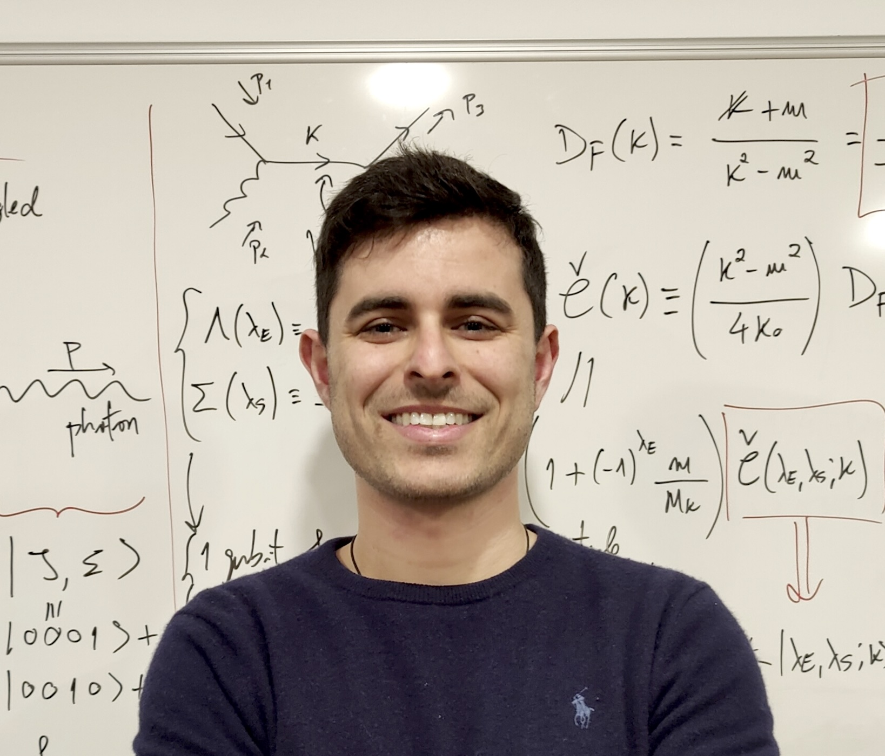

I'm a theoretical physicist working on the unification of the fundamental forces of Nature. My past work includes black holes, quantum field theory in curved spacetime, quantum information and quantum computation.
Octonions, Standard Model, and Unification (OSMU) talk · 2026
Fever Talks · 2021